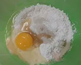
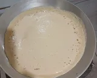
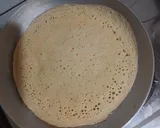
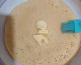
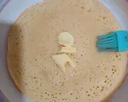
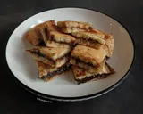

Resep Kue Apem
Dibuat Oleh: Afham

Apem (id) adalah makanan yang terbuat dari tepung beras yang didiamkan semalam dengan mencampurkan telur, santan, gula dan tape serta sedikit garam kemudian dibakar atau dikukus. Bentuknya mirip serabi, tetapi lebih tebal. Makanan ini berasal dari Jawa.
Bahan A:
- 125 gr tepung terigu
- 25 gr gula pasir
- 1 butir telur
- 1/2 sdt ragi instan
- 150 ml air
- sejumput garam
- 1/2 sdt vanili
Topping
- secukupnya gula pasir
- secukupnya margarin
- secukupnya selai coklat
Bahan B
- 1/2 sdt baking powder
- 1 sdm air
Langkah-langkahnya
- Campur semua bahan A, aduk rata

.webp)
- Diamkan adonan selama 1 jam, lalu campur bahan B, masukan bahan B ke adonan, aduk rata
.webp)
- Panaskan wajan, olesi wajan dengan sedikit margarin, tuangkan adonan saat wajan sudah benar benar panas

- Saat adonan hampir matang, taburi dengan secukupnya gula pasir, lalu tutup wajan, tunggu hingga matang

- Angkat martabak, olesi dengan secukupnya margarin, lalu beri selai coklat
.webp) 

- Lipat martabak lalu potong sesuai selera
.webp)
- Siap disajikan
